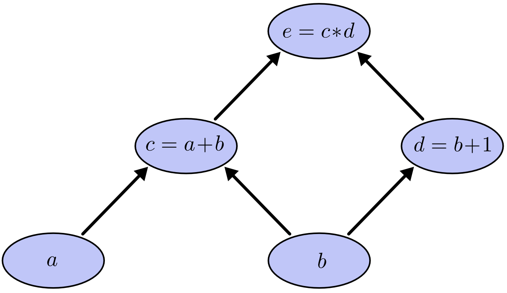
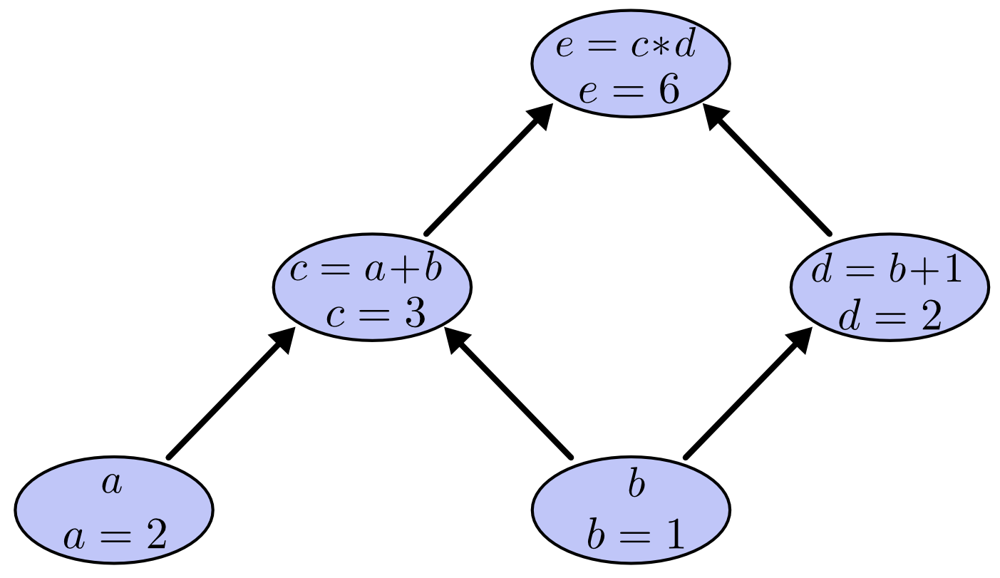
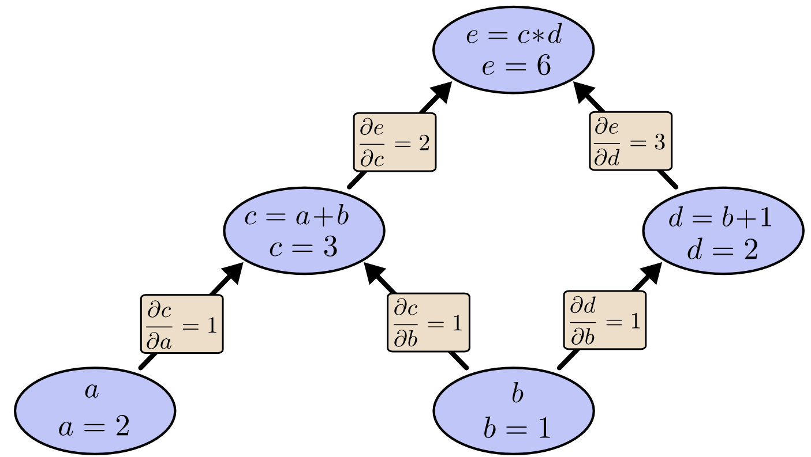
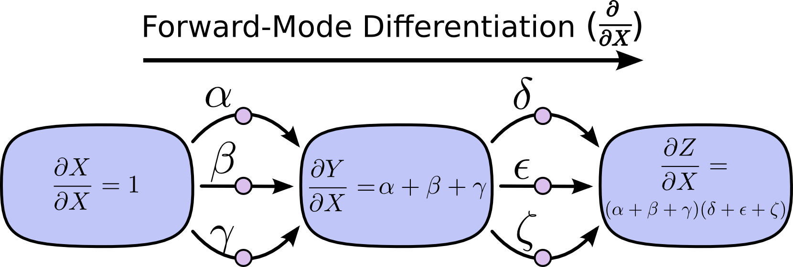
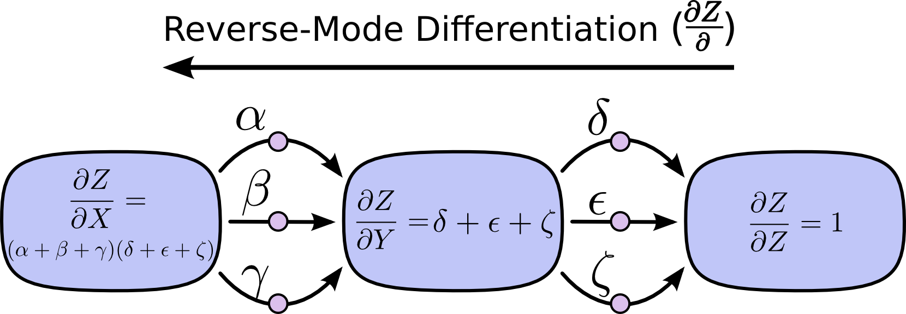
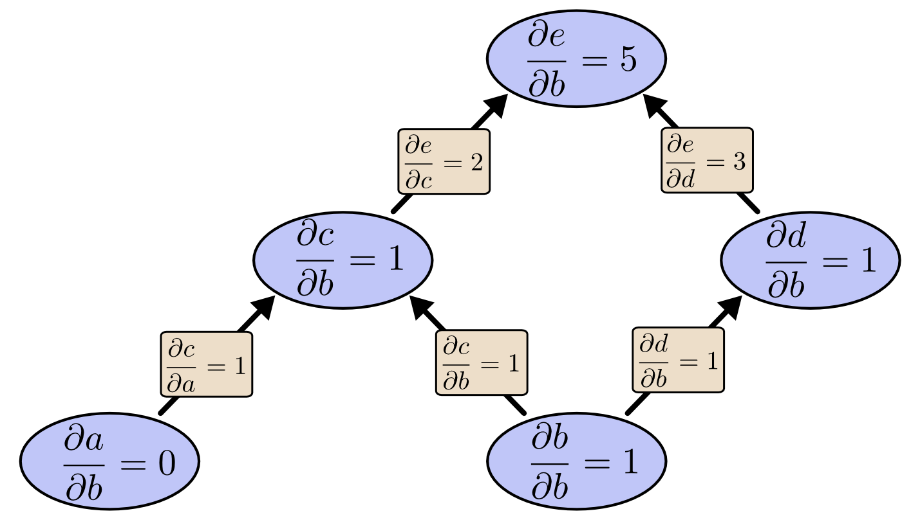
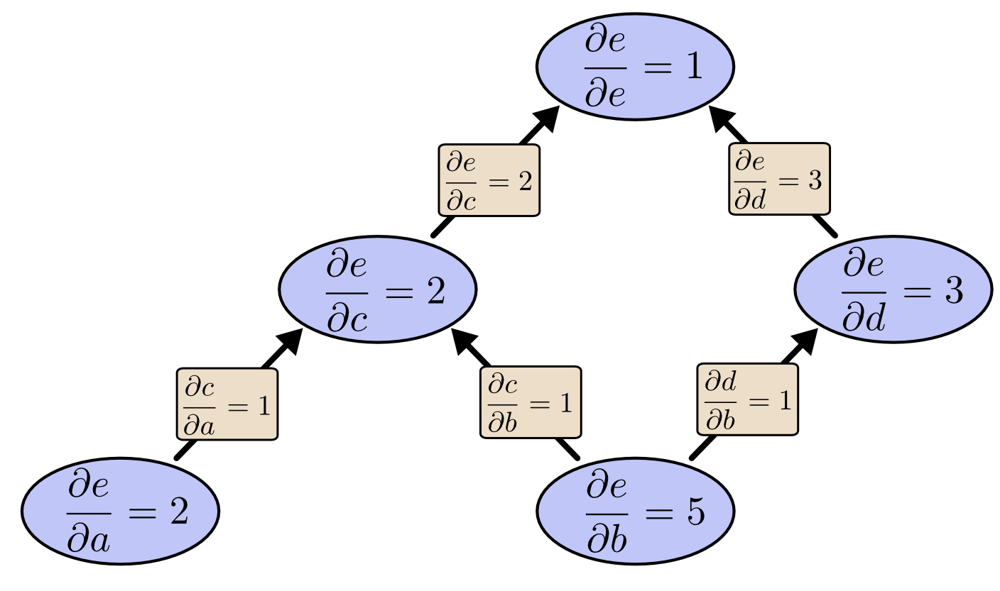
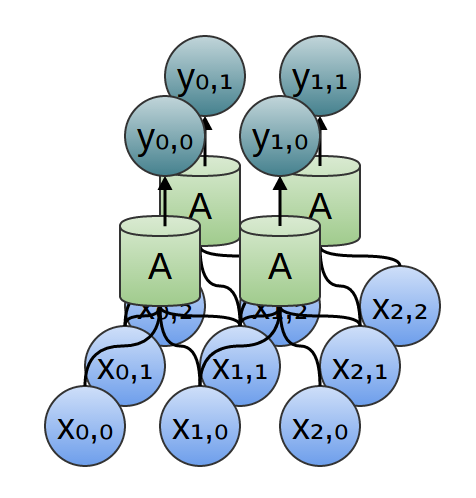

Calculus on Computational Graphs: Backpropagation
Posted on August 31, 2015
Introduction
Backpropagation is the key algorithm that makes training deep models computationally tractable. For modern neural networks, it can make training with gradient descent as much as ten million times faster, relative to a naive implementation. That’s the difference between a model taking a week to train and taking 200,000 years.
Beyond its use in deep learning, backpropagation is a powerful computational tool in many other areas, ranging from weather forecasting to analyzing numerical stability – it just goes by different names. In fact, the algorithm has been reinvented at least dozens of times in different fields (see Griewank (2010)). The general, application independent, name is “reverse-mode differentiation.”
Fundamentally, it’s a technique for calculating derivatives quickly. And it’s an essential trick to have in your bag, not only in deep learning, but in a wide variety of numerical computing situations.
Computational Graphs
Computational graphs are a nice way to think about mathematical expressions. For example, consider the expression \(e=(a+b)*(b+1)\). There are three operations: two additions and one multiplication. To help us talk about this, let’s introduce two intermediary variables, \(c\) and \(d\) so that every function’s output has a variable. We now have:
\[c=a+b\]
\[d=b+1\]
\[e=c*d\]
To create a computational graph, we make each of these operations, along with the input variables, into nodes. When one node’s value is the input to another node, an arrow goes from one to another.

These sorts of graphs come up all the time in computer science, especially in talking about functional programs. They are very closely related to the notions of dependency graphs and call graphs. They’re also the core abstraction behind the popular deep learning framework Theano.
We can evaluate the expression by setting the input variables to certain values and computing nodes up through the graph. For example, let’s set \(a=2\) and \(b=1\):

The expression evaluates to \(6\).
Derivatives on Computational Graphs
If one wants to understand derivatives in a computational graph, the key is to understand derivatives on the edges. If \(a\) directly affects \(c\), then we want to know how it affects \(c\). If \(a\) changes a little bit, how does \(c\) change? We call this the partial derivative of \(c\) with respect to \(a\).
To evaluate the partial derivatives in this graph, we need the sum rule and the product rule:
\[\frac{\partial}{\partial a}(a+b) = \frac{\partial a}{\partial a} + \frac{\partial b}{\partial a} = 1\]
\[\frac{\partial}{\partial u}uv = u\frac{\partial v}{\partial u} + v\frac{\partial u}{\partial u} = v\]
Below, the graph has the derivative on each edge labeled.

What if we want to understand how nodes that aren’t directly connected affect each other? Let’s consider how \(e\) is affected by \(a\). If we change \(a\) at a speed of 1, \(c\) also changes at a speed of \(1\). In turn, \(c\) changing at a speed of \(1\) causes \(e\) to change at a speed of \(2\). So \(e\) changes at a rate of \(1*2\) with respect to \(a\).
The general rule is to sum over all possible paths from one node to the other, multiplying the derivatives on each edge of the path together. For example, to get the derivative of \(e\) with respect to \(b\) we get:
\[\frac{\partial e}{\partial b}= 1*2 + 1*3\]
This accounts for how b affects e through c and also how it affects it through d.
This general “sum over paths” rule is just a different way of thinking about the multivariate chain rule.
Factoring Paths
The problem with just “summing over the paths” is that it’s very easy to get a combinatorial explosion in the number of possible paths.

In the above diagram, there are three paths from \(X\) to \(Y\), and a further three paths from \(Y\) to \(Z\). If we want to get the derivative \(\frac{\partial Z}{\partial X}\) by summing over all paths, we need to sum over \(3*3 = 9\) paths:
\[\frac{\partial Z}{\partial X} = \alpha\delta + \alpha\epsilon + \alpha\zeta + \beta\delta + \beta\epsilon + \beta\zeta + \gamma\delta + \gamma\epsilon + \gamma\zeta\]
The above only has nine paths, but it would be easy to have the number of paths to grow exponentially as the graph becomes more complicated.
Instead of just naively summing over the paths, it would be much better to factor them:
\[\frac{\partial Z}{\partial X} = (\alpha + \beta + \gamma)(\delta + \epsilon + \zeta)\]
This is where “forward-mode differentiation” and “reverse-mode differentiation” come in. They’re algorithms for efficiently computing the sum by factoring the paths. Instead of summing over all of the paths explicitly, they compute the same sum more efficiently by merging paths back together at every node. In fact, both algorithms touch each edge exactly once!
Forward-mode differentiation starts at an input to the graph and moves towards the end. At every node, it sums all the paths feeding in. Each of those paths represents one way in which the input affects that node. By adding them up, we get the total way in which the node is affected by the input, it’s derivative.

Though you probably didn’t think of it in terms of graphs, forward-mode differentiation is very similar to what you implicitly learned to do if you took an introduction to calculus class.
Reverse-mode differentiation, on the other hand, starts at an output of the graph and moves towards the beginning. At each node, it merges all paths which originated at that node.

Forward-mode differentiation tracks how one input affects every node. Reverse-mode differentiation tracks how every node affects one output. That is, forward-mode differentiation applies the operator \(\frac{\partial}{\partial X}\) to every node, while reverse mode differentiation applies the operator \(\frac{\partial Z}{\partial}\) to every node.1
Computational Victories
At this point, you might wonder why anyone would care about reverse-mode differentiation. It looks like a strange way of doing the same thing as the forward-mode. Is there some advantage?
Let’s consider our original example again:
We can use forward-mode differentiation from \(b\) up. This gives us the derivative of every node with respect to \(b\).

We’ve computed \(\frac{\partial e}{\partial b}\), the derivative of our output with respect to one of our inputs.
What if we do reverse-mode differentiation from \(e\) down? This gives us the derivative of \(e\) with respect to every node:

When I say that reverse-mode differentiation gives us the derivative of e with respect to every node, I really do mean every node. We get both \(\frac{\partial e}{\partial a}\) and \(\frac{\partial e}{\partial b}\), the derivatives of \(e\) with respect to both inputs. Forward-mode differentiation gave us the derivative of our output with respect to a single input, but reverse-mode differentiation gives us all of them.
For this graph, that’s only a factor of two speed up, but imagine a function with a million inputs and one output. Forward-mode differentiation would require us to go through the graph a million times to get the derivatives. Reverse-mode differentiation can get them all in one fell swoop! A speed up of a factor of a million is pretty nice!
When training neural networks, we think of the cost (a value describing how bad a neural network performs) as a function of the parameters (numbers describing how the network behaves). We want to calculate the derivatives of the cost with respect to all the parameters, for use in gradient descent. Now, there’s often millions, or even tens of millions of parameters in a neural network. So, reverse-mode differentiation, called backpropagation in the context of neural networks, gives us a massive speed up!
(Are there any cases where forward-mode differentiation makes more sense? Yes, there are! Where the reverse-mode gives the derivatives of one output with respect to all inputs, the forward-mode gives us the derivatives of all outputs with respect to one input. If one has a function with lots of outputs, forward-mode differentiation can be much, much, much faster.)
Isn’t This Trivial?
When I first understood what backpropagation was, my reaction was: “Oh, that’s just the chain rule! How did it take us so long to figure out?” I’m not the only one who’s had that reaction. It’s true that if you ask “is there a smart way to calculate derivatives in feedforward neural networks?” the answer isn’t that difficult.
But I think it was much more difficult than it might seem. You see, at the time backpropagation was invented, people weren’t very focused on the feedforward neural networks that we study. It also wasn’t obvious that derivatives were the right way to train them. Those are only obvious once you realize you can quickly calculate derivatives. There was a circular dependency.
Worse, it would be very easy to write off any piece of the circular dependency as impossible on casual thought. Training neural networks with derivatives? Surely you’d just get stuck in local minima. And obviously it would be expensive to compute all those derivatives. It’s only because we know this approach works that we don’t immediately start listing reasons it’s likely not to.
That’s the benefit of hindsight. Once you’ve framed the question, the hardest work is already done.
Conclusion
Derivatives are cheaper than you think. That’s the main lesson to take away from this post. In fact, they’re unintuitively cheap, and us silly humans have had to repeatedly rediscover this fact. That’s an important thing to understand in deep learning. It’s also a really useful thing to know in other fields, and only more so if it isn’t common knowledge.
Are there other lessons? I think there are.
Backpropagation is also a useful lens for understanding how derivatives flow through a model. This can be extremely helpful in reasoning about why some models are difficult to optimize. The classic example of this is the problem of vanishing gradients in recurrent neural networks.
Finally, I claim there is a broad algorithmic lesson to take away from these techniques. Backpropagation and forward-mode differentiation use a powerful pair of tricks (linearization and dynamic programming) to compute derivatives more efficiently than one might think possible. If you really understand these techniques, you can use them to efficiently calculate several other interesting expressions involving derivatives. We’ll explore this in a later blog post.
This post gives a very abstract treatment of backpropagation. I strongly recommend reading Michael Nielsen’s chapter on it for an excellent discussion, more concretely focused on neural networks.
Acknowledgments
Thank you to Greg Corrado, Jon Shlens, Samy Bengio and Anelia Angelova for taking the time to proofread this post.
Thanks also to Dario Amodei, Michael Nielsen and Yoshua Bengio for discussion of approaches to explaining backpropagation. Also thanks to all those who tolerated me practicing explaining backpropagation in talks and seminar series!
This might feel a bit like dynamic programming. That’s because it is!↩
More Posts

Understanding LSTM Networks

Visualizing MNIST
An Exploration of Dimensionality Reduction
